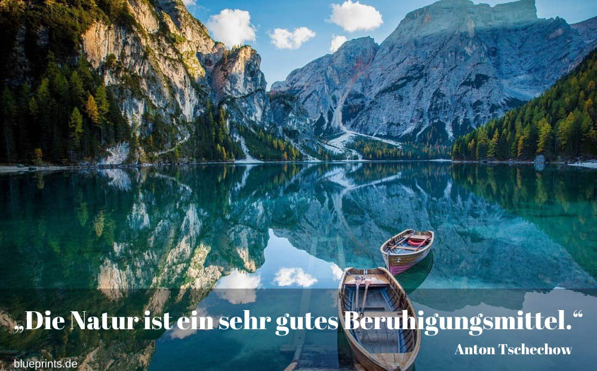

die natur - LEO: Übersetzung im Englisch ⇔ Deutsch Wörterbuch
 HomeWörterbuch
Forum Trainer Kurse Toolbars & Apps Hilfe & Weiteres Page in English WerbungSie scheinen einen AdBlocker zu verwenden.
Wollen Sie LEO unterstützen?
Dann deaktivieren Sie AdBlock für LEO oder spenden Sie!
SpendenLiebe Nutzerin, lieber Nutzer,
mit Ihrer Spende leisten Sie einen Beitrag zum Erhalt und zur Weiterentwicklung unseres Angebotes, das wir mit viel Enthusiasmus und Hingabe pflegen. Vielen Dank, dass Sie unser Angebot durch eine Spende unterstützen wollen!Spende per Überweisung
LEO GmbHMühlweg 2b
82054 Sauerlach
IBAN: DE41 7019 0000 0000 2930 32
BIC: GENODEF1M01
Spende über Paypal
Hinweis: Spenden an die LEO GmbH sind leider nicht steuerlich abzugsfähig. LEO: Zusatzinformationen LEO: Flexionstabelle Drucken (PDF)Um eine neue Diskussion zu starten, müssen Sie angemeldet sein. Anmeldung und Nutzung des Forums sind kostenlos.
Sie können aber jederzeit auch unangemeldet das Forum durchsuchen.
Um Vokabeln speichern und später lernen zu können, müssen Sie angemeldet sein. Sowohl die Registrierung als auch die Nutzung des Trainers sind kostenlos
In welchem Forum wollen Sie eine neue Anfrage starten?
Deutsche Übersetzung gesuchtEnglische Übersetzung gesucht Hier sehen Sie Ihre letzten Suchanfragen, die neueste zuerst. Klicken Sie einfach auf ein Wort, um die Ergebnisse erneut angezeigt zu bekommen # Suchwort
Werbung
Unterstützen Sie LEO:
Spenden Zur mobilen Version wechseln Substantive :: Adjektive :: Verben :: Präpositionen :: Abkürzungen :: Beispiele :: Phrasen :: Suchumfeld :: Grammatik :: Diskussionen ::Substantive
nature die Natur Pl.: die Naturen quality die Natur Pl.: die Naturen countryside die Natur Pl.: die Naturen kind die Natur Pl.: die Naturen the great outdoors die freie Natur nature hike Wanderung durch die Natur natural hazard Gefährdung durch die Natur die Sg., meist im Plural: dice der Spielwürfel Pl.: die Spielwürfel die Sg., meist im Plural: dice der Würfel Pl.: die Würfel die [ ING. ] das Gesenk Pl.: die Gesenke [Schmieden] die [ ING. ] das Plättchen Pl.: die Plättchen - aus Halbleitermaterial die [ TECH. ] der Gewindeschneider Pl.: die Gewindeschneider - für Außengewinde die [ TECH. ] die Matrize Pl.: die Matrizen die [ TECH. ] der Stempel Pl.: die Stempel Weitere Substantive verbergen Weitere Substantive anzeigen (13 / 826) Bitte verändern Sie Ihre Suche für weitere ÜbersetzungenAdjektive / Adverbien
against nature wider die Natur preposterous to nature wider die Natur die cast gespritzt to die for [ ugs. ] unwiderstehlich Adj. die cast [ TECH. ] druckgegossen congenitally Adv. von Natur sine die lateinisch auf unbestimmte Zeit fated to die zum Tode verurteilt in nature in der Natur die -forged Adj. gesenkgeschmiedet die -hard Adj. eingefleischt natural Adj. Natur ... die -away Adj. schmachtend die -cast Adj. druckgegossen Weitere Adjektive / Adverbien verbergen Weitere Adjektive / Adverbien anzeigen (13 / 22)Verben
to act contrary to nature wider die Natur handeln to die ( of ( oder: from ) sth.) | died, died | ( an etw. Dat. ) sterben | starb, gestorben | to die | died, died | verenden | verendete, verendet | - hauptsächlich Tiere to die | died, died | zu Tode kommen to die | died, died | ableben | lebte ab, abgelebt | to die | died, died | - plants, animals eingehen | ging ein, eingegangen | - Pflanzen, Tiere to die | died, died | [ TECH. ] ausschwingen | schwang aus, ausgeschwungen | - Schwingungen to die | died, died | - in war [ MILIT. ] fallen | fiel, gefallen | to die | died, died | krepieren | krepierte, krepiert | [ pej. ] [ ugs. ] to die | died, died | den Tod finden [ form. ] to die | died, died | vergehen | verging, vergangen | [ form. ] to die | died, died | ersterben | erstarb, erstorben | selten to die | died, died | [ TECH. ] ausdünnen | dünnte aus, ausgedünnt | to die | died, died | [ TECH. ] auskeilen | keilte aus, ausgekeilt | Weitere Verben verbergen Weitere Verben anzeigen (13 / 82)Präpositionen / Pronomen / ...
whom Pron. den | die | das the Art. - definite article der , die , das which Pron. der , die , das who Pron. der , die , das - Relativpronomen that Adj. Adv. Pron. der , die , das that Pron. den | die | das who Pron. den | die | das which Pron. den | die | das - Relativpronomen im Akkusativ ye Art. - pseudo-archaic definite article often used in pub names der ( oder: die , das )Abkürzungen
designated investment exchange [ Abk.: DIE ] [ FINAN. ] der Börsenplatz Pl.: die BörsenplätzeBeispiele
all other contents - furniture & fixtures Pl. die Einrichtungsgegenstände appointment of a date die Fristsetzung a distinction without difference die Haarspalterei extra pay for difficult working conditions [ FINAN. ] die Erschwerniszulage the rules applicable die anwendbaren Regeln amount of security die Höhe der Sicherheitsleistung this year's conference die diesjährige Konferenz all outgoing mail die ganze Ausgangspost The lines run parallel . Die Linien verlaufen parallel . the top ten die besten Zehn expectations of the listener Pl. die Erwartungshaltung des Hörers opinions differ die Meinungen gehen auseinander adjustment of the terms die Anpassung der Bedingungen adjustment of the sum insured die Anpassung der Versicherungssumme Weitere Beispiele verbergen Weitere Beispiele anzeigen (13 / 146)Phrasen
Never say die ! Nur nicht verzweifeln ! The die is cast . Die Würfel sind gefallen . Whom the gods love die young . Wen die Götter lieben , der stirbt jung . It's in the nature of things . Es liegt in der Natur der Sache . Hope dies last . Die Hoffnung stirbt zuletzt . Old love never dies . Alte Liebe rostet nicht .Weitere Aktionen
Neue Diskussion starten Gespeicherte Vokabeln sortieren SuchhistorieAus dem Umfeld der Suche
Beschaffenheit , Fertigungsklasse , Art , naturgemäß , ursprünglich , Eigenschaft , angeboren , GüteeigenschaftGrammatik
\n\t\tDie Bedeutungsgruppen der Nomen\n\tNomen bezeichnen Lebewesen, Pflanzen, Dinge, Materialien und abstrakte Begriffe wie Eigenschaften, Vorgänge, Beziehungen usw. Nach der Natur des Bezeichneten werden die Nomen in verschiedene Bedeutungsgruppen eingeteilt: der/das/die
Pronomen: Relativpronomen: der/das/die
Bestimmter Artikel
Zur Grammatik
Forumsdiskussionen, die den Suchbegriff enthalten
nature - die Natur Letzter Beitrag: 11 Apr. 11, 14:41 Oxford Dictionary http://oxforddictionaries.com/view/entry/m_en_gb0549910#m_en_gb0549910 na… 3 Antworten countryside, - die Natur Letzter Beitrag: 11 Apr. 11, 19:12 Oxford Dictionary http://oxforddictionaries.com/view/entry/m_en_gb0549910#m_en_gb0549910 na… 6 Antworten die Natur - Natur Letzter Beitrag: 02 Sep. 06, 21:15 Folgendes Problem... benutze ich bei nature im Englischen einen Artikel?? Bsp: Ich spazier… 1 Antworten die Natur - Natur Letzter Beitrag: 03 Sep. 06, 02:51 Folgendes Problem... benutze ich bei nature im Englischen einen Artikel?? Bsp: Ich spazier… 35 Antworten die Natur Letzter Beitrag: 18 Okt. 07, 12:12 raus in die Natur gehen wann kann ich mit nature den Artikel the verwenden 4 Antworten gegen die Natur Letzter Beitrag: 19 Nov. 07, 12:44 Mir macht der Satz von Charles Darwin: "Alles was gegen die Natur ist, hat auf Dauer keinen … 13 Antworten Beschreibt die Natur Letzter Beitrag: 10 Okt. 09, 11:17 Die Aufgabenstellung in einer Prüfungsaufgabe lautet: You are walking through the jungle. D… 3 Antworten mother nature - Mutter Natur Letzter Beitrag: 03 Mär. 12, 16:42 Mother Nature n. The personification of nature as a powerful and nurturing woman. The Amer… 1 Antworten Es lebe die Natur! Letzter Beitrag: 16 Mär. 05, 14:58 Es lebe die Natur! (als Ausdruck) Wie kann ich das übersetzen? 2 Antworten Die Natur als Ideengeber Letzter Beitrag: 29 Nov. 08, 20:40 Die Natur als Ideengeber für etwas (z.B. für Innovationen, neue Produkte o.ä.) LEO spuckt "s… 4 Antworten Mehr Zur mobilen Version wechselnForum Noch Fragen? In unseren Foren helfen Nutzer sich gegenseitig. © Vokabeltrainer Frischen Sie Ihre Vokabelkenntnisse mit unserem kostenlosen Trainer auf. © Sprachkurse Lernen Sie eine neue Sprache - mit LEO ganz leicht! © Grammatik Vertiefen Sie sich in die englische und deutsche Grammatik von LEO - mit tausenden Beispielen!